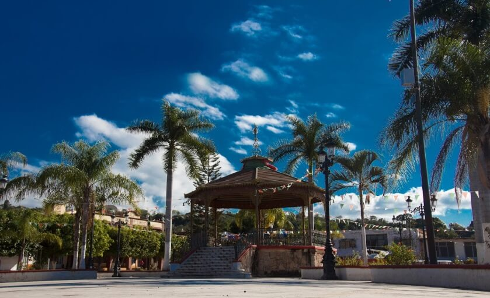
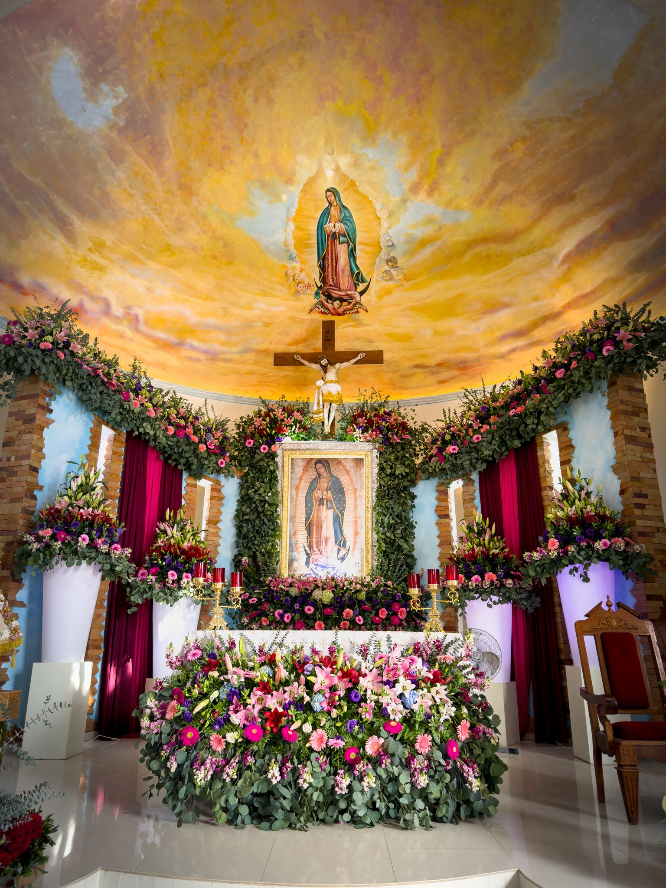
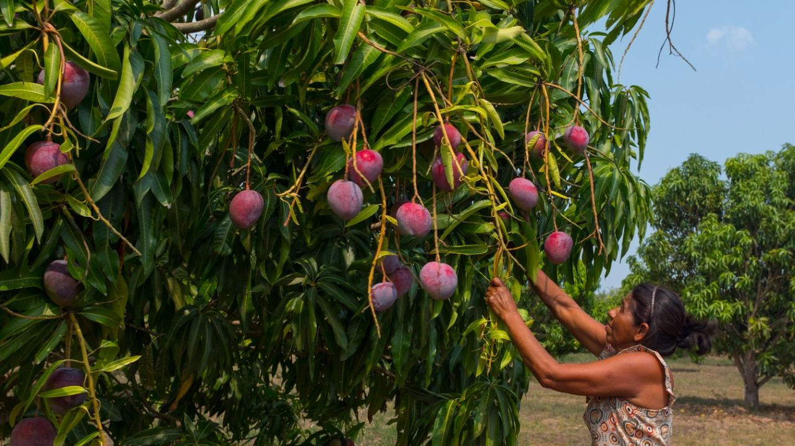
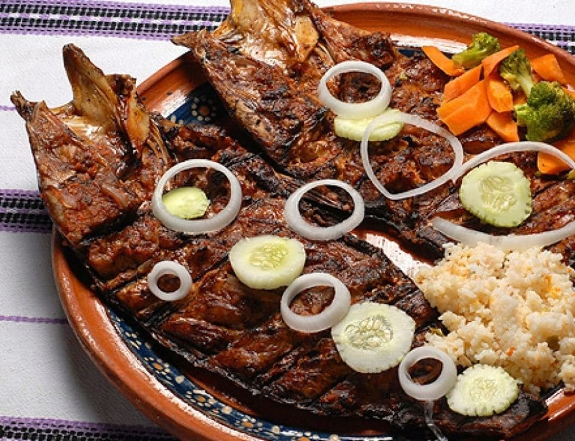
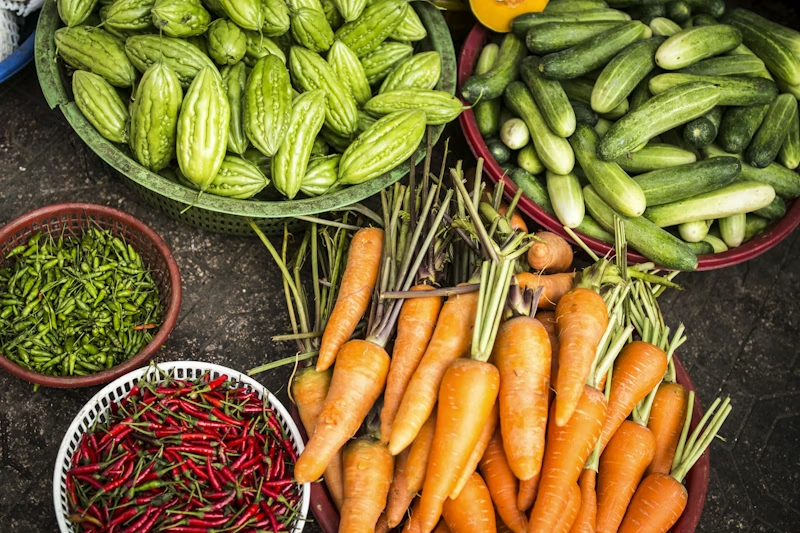

Corazón agricola y puerta a la costa
Ubicado estratégicamente entre la sierra y el mar, Las Varas es el motor comercial de la Riviera Nayarit. Fundado sobre antiguas tierras de hacienda, este pueblo vibra con actividad desde el amanecer.
Famoso por ser una tierra fértil, aquí se producen las mejores frutas tropicales de la región: Mango, Yaca, Guanábana y Tabaco. Es el punto de encuentro ideal para disfrutar de la gastronomía local antes de bajar a las playas de Chacala.





Comercio, tradición y naturaleza
Conoce la producción de tabaco, frijol y frutas exóticas como la Yaca, que se exportan a todo el mundo.
Desde tacos de birria al amanecer hasta mariscos frescos traídos de la costa. El sabor aquí es 100% auténtico.
A solo 15 minutos de Chacala. Es el lugar ideal para hospedarse, comprar provisiones y planear tu visita al mar.
Un pueblo vivo donde encontrarás artesanías, mercados locales y todo lo necesario para tu viaje.
En honor a la Virgen de Guadalupe y San Pedro Apóstol, el pueblo se llena de música, danza y color.
Descubre los vestigios de la antigua hacienda que dio origen al nombre y fundación de esta comunidad.
Las Varas es un punto estratégico. Aquí te dejamos algunos consejos:
Municipio de Compostela
Cálido Subhúmedo
Agricultura y Comercio
Familiar y Activo
Disfruta de la calidez de su gente y los sabores más frescos de Compostela.
Ver en Google Maps